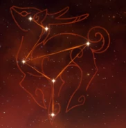

Una reconocida asesora legal que vive en Liyue. Esta joven tan persipicaz tiene parte de sangre bestia iluminada.
Artefacto/s recomendados


Atq% / Maestria

Bono pyro

Daño / Prob critica
Daño/Prob critica > Atq% > Maestria
Talentos
Pasivas
Constelacion
Armas Recomendadas


Personajes compatibles